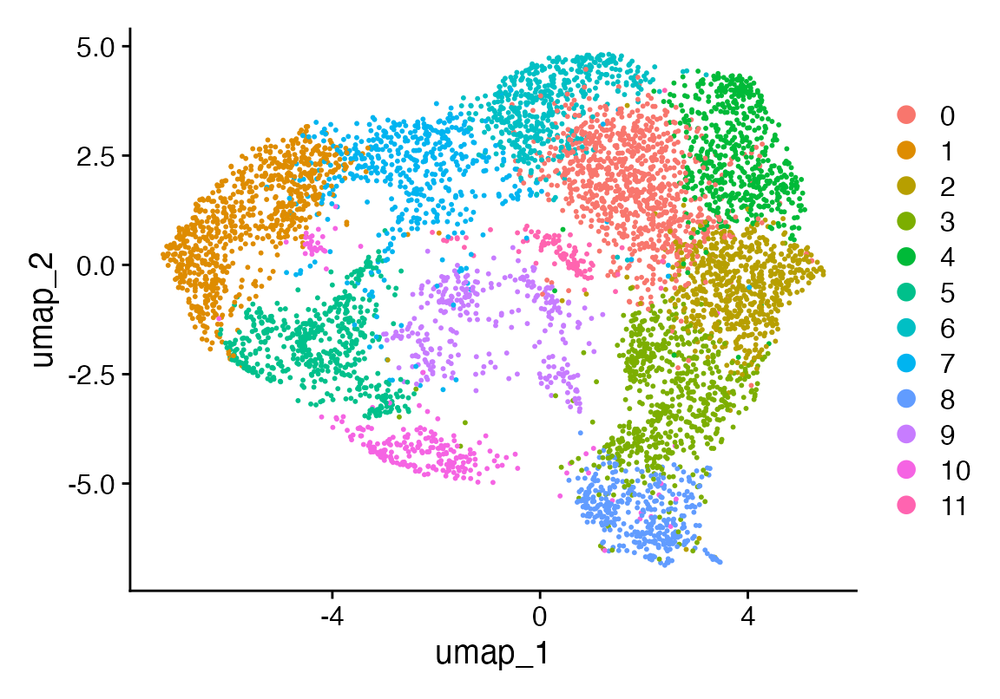
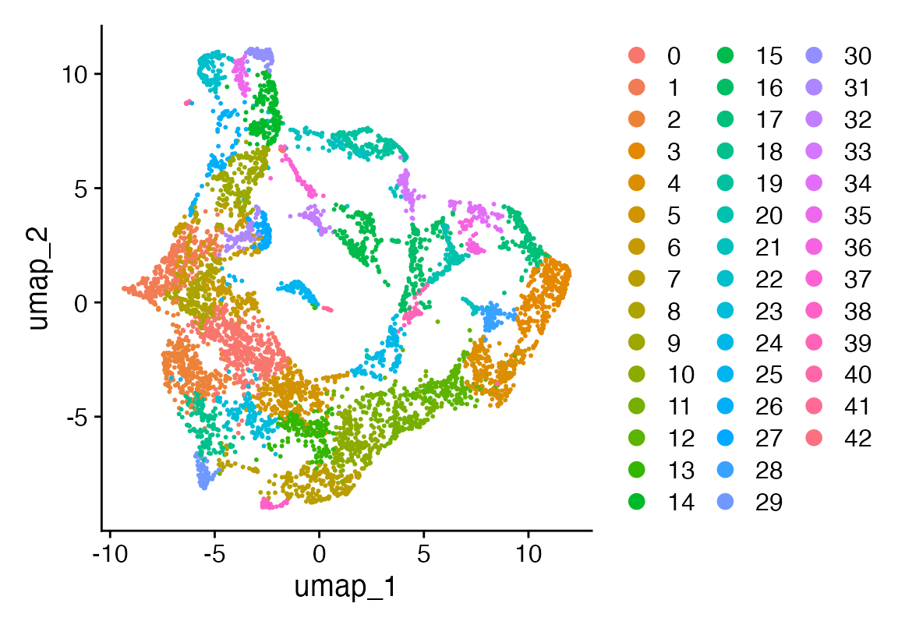

PCHA
2025-05-06
pcha.RmdInstalling Rust
First you need to have an updated Rust installation. Go to this site to learn how to install Rust.
Installing rustytools
You will need to have the devtools package installed…
devtools::install_github("furlan-lab/rustytools", force=T)Overview of PCHA implemented in Rust
1. Problem set-up
| symbol | shape | meaning | ||
|---|---|---|---|---|
| variables × samples | raw data | |||
| ( | I | =n_I) | dictionary columns (“atoms”) | |
| ( | U | =n_U) | columns to be approximated | |
| — | number of archetypes (components) |
We split and seek
with the convex-hull constraints
The sum-of-squares error (SSE) to minimise is
2. Algebra that drives the code
-
Expand (1)
Two cached Gram matrices therefore appear everywhere in the Rust code
-
Gradients
(These two lines are the heart of
s_updateandc_update.) -
Projected–gradient step
Take a gradient step: for .
-
Project back to the feasible set. Each column is sent onto the probability simplex
$$ \Delta^{m-1}:=\Bigl\{\,z\in\mathbb{R}^m_{\ge 0}: \langle\mathbf 1,z\rangle=1\Bigr\}, $$
using the Wang–Carreira-Perpiñán algorithm (O(m log m)), implemented in
project_simplex. Armijo-type line-search If the new SSE is not smaller, shrink ; else accept and enlarge . (see the inner
while !stoploops).
-
Optional “α-relaxation’’ To let each archetype deviate slightly from exact $ _1! =!1$, a per-column scalar is fitted (second part of
c_update). In formulas: minimise w.r.t.
3. Initialisation
-
Furthest-Sum (FS) finds columns of that are mutually far apart in Euclidean distance:
choose seed i₁ repeat pick i_{t+1} := argmax_j Σ_{s≤t} ‖x_{i_s}-x_j‖FS provides an indicator matrix with exact simplex columns (one “1” each).
Dirichlet-type random Each column is drawn i.i.d. from ⇒ uniform over the simplex.
5. Output
- and re-ordered by column usage (desc).
- Archetypes .
- Final SSE and variance explained .
Big picture You learned a convex-hull factorisation that sits halfway between k-means (hard memberships, no convexity) and NMF/PCA (basis vectors not constrained to the data hull).
All optimisation boils down to “gradient + project” on simplexes, with a few cleverly cached Gram matrices to keep the numeric cost low.
Create a data set with a known archetypal structure
library(rustytools)
### Toy data with a known archetypal structure
set.seed(42)
p <- 60 # genes
n <- 300 # cells
k0 <- 5 # ground-truth archetypes
# 1. ground-truth archetype matrix A (p × k0)
A <- matrix(rexp(p * k0, 1), p, k0)
# 2. sample coefficients S on the simplex
alpha <- matrix(rexp(k0 * n, 1), k0, n)
S <- sweep(alpha, 2, colSums(alpha), "/")
# 3. generate data with small noise
X <- A %*% S + matrix(rgamma(p * n, shape = 1, rate = 50), p, n)Finding optimal number of archetypes
First we set a number of k to iterate through. Using the future
library we can perform pcha on each k in parallel. We normalize the sum
squared error, then use the find_knee_pt function to find
the optimal number of archetypes which is our ground truth archetype
from above
ks <- 1:40
library(future.apply)
plan(multisession)
sse <- future_sapply(ks, function(k) pcha(X, k)$sse)
norm_sse <- sse / sum(X * X)
kp <- find_knee_pt(norm_sse, ks, make_plot = TRUE)
cat("Optimal number of archetypes =", kp$knee_x, "\n")## Optimal number of archetypes = 5
plan(sequential)What does this look like in single cell RNA sequencing data
First subset out the tumor
library(Seurat)
library(magrittr)
seu <- readRDS("~/Fred Hutch Cancer Center/Furlan_Lab - General/experiments/patient_marrows/DB1/cds/221022_DB1_seu_5p_with_cell_labels_SNF.RDS")
DimPlot(seu, group.by = "seurat_clusters")
DimPlot(seu, group.by = "geno")
seu$sb <- seu$geno %in% "0" & seu$seurat_clusters %in% c("0", "1", "2", "3", "4", "11")
#DimPlot(seu, group.by = "sb")
seu <- seu[,seu$sb]
seu <- NormalizeData(seu, verbose = F) %>% ScaleData(verbose = F) %>% FindVariableFeatures(verbose = F) %>% RunPCA(npcs = 100, verbose = F)
ElbowPlot(seu, ndims = 100)
seu <- FindNeighbors(seu, dims = 1:35, verbose = F) %>% FindClusters(verbose = F) %>% RunUMAP(dims = 1:35, n.epochs = 500, verbose = F)
DimPlot(seu)
seu <- seurat_magic(seu, alpha = 1)
vf <- VariableFeatures(seu)
X <- as.matrix(seu@assays$MAGIC@data[vf, ])
noc <- 15
res <- pcha(X, noc = noc)
weights_df <- as.data.frame(t(res$S)) # cells × k
colnames(weights_df) <- paste0("arch", seq_len(noc))
# a single label: archetype with the largest weight
seu$max_arch <- factor(
apply(weights_df, 1L, which.max),
levels = seq_len(noc),
labels = paste0("Arch", seq_len(noc))
)
DimPlot(seu, group.by = "max_arch")
viewmastR::confusion_matrix(gt = seu$max_arch, pred = seu$seurat_clusters)
noc <- 10
res <- pcha(X, noc = noc)
weights_df <- as.data.frame(t(res$S)) # cells × k
colnames(weights_df) <- paste0("arch", seq_len(noc))
# a single label: archetype with the largest weight
seu$max_arch <- factor(
apply(weights_df, 1L, which.max),
levels = seq_len(noc),
labels = paste0("Arch", seq_len(noc))
)
DimPlot(seu, group.by = "max_arch")
viewmastR::confusion_matrix(gt = seu$max_arch, pred = seu$seurat_clusters)
Appendix
## R version 4.4.3 (2025-02-28)
## Platform: aarch64-apple-darwin20
## Running under: macOS Sequoia 15.4.1
##
## Matrix products: default
## BLAS: /Library/Frameworks/R.framework/Versions/4.4-arm64/Resources/lib/libRblas.0.dylib
## LAPACK: /Library/Frameworks/R.framework/Versions/4.4-arm64/Resources/lib/libRlapack.dylib; LAPACK version 3.12.0
##
## locale:
## [1] en_US.UTF-8/en_US.UTF-8/en_US.UTF-8/C/en_US.UTF-8/en_US.UTF-8
##
## time zone: America/Los_Angeles
## tzcode source: internal
##
## attached base packages:
## [1] stats graphics grDevices utils datasets methods base
##
## other attached packages:
## [1] magrittr_2.0.3 Seurat_5.2.1 SeuratObject_5.0.2
## [4] sp_2.2-0 future.apply_1.11.3 future_1.40.0
## [7] rustytools_0.0.2
##
## loaded via a namespace (and not attached):
## [1] fs_1.6.5 matrixStats_1.5.0
## [3] spatstat.sparse_3.1-0 RcppMsgPack_0.2.4
## [5] lubridate_1.9.4 httr_1.4.7
## [7] RColorBrewer_1.1-3 doParallel_1.0.17
## [9] tools_4.4.3 sctransform_0.4.1
## [11] backports_1.5.0 R6_2.6.1
## [13] lazyeval_0.2.2 uwot_0.2.3
## [15] GetoptLong_1.0.5 withr_3.0.2
## [17] scCustomize_3.0.1 gridExtra_2.3
## [19] progressr_0.15.1 cli_3.6.4
## [21] Biobase_2.66.0 textshaping_1.0.0
## [23] Cairo_1.6-2 spatstat.explore_3.4-2
## [25] fastDummies_1.7.5 labeling_0.4.3
## [27] sass_0.4.9 spatstat.data_3.1-6
## [29] proxy_0.4-27 ggridges_0.5.6
## [31] pbapply_1.7-2 pkgdown_2.1.1
## [33] systemfonts_1.2.2 foreign_0.8-90
## [35] R.utils_2.13.0 parallelly_1.43.0
## [37] rstudioapi_0.17.1 generics_0.1.3
## [39] shape_1.4.6.1 ica_1.0-3
## [41] spatstat.random_3.3-3 dplyr_1.1.4
## [43] Matrix_1.7-3 ggbeeswarm_0.7.2
## [45] S4Vectors_0.44.0 abind_1.4-8
## [47] R.methodsS3_1.8.2 lifecycle_1.0.4
## [49] yaml_2.3.10 snakecase_0.11.1
## [51] SummarizedExperiment_1.36.0 recipes_1.2.1
## [53] SparseArray_1.6.2 Rtsne_0.17
## [55] paletteer_1.6.0 grid_4.4.3
## [57] promises_1.3.2 crayon_1.5.3
## [59] miniUI_0.1.1.1 lattice_0.22-7
## [61] cowplot_1.1.3 pillar_1.10.2
## [63] knitr_1.50 ComplexHeatmap_2.22.0
## [65] GenomicRanges_1.58.0 rjson_0.2.23
## [67] boot_1.3-31 codetools_0.2-20
## [69] glue_1.8.0 spatstat.univar_3.1-2
## [71] data.table_1.17.0 vctrs_0.6.5
## [73] png_0.1-8 spam_2.11-1
## [75] Rdpack_2.6.4 gtable_0.3.6
## [77] rematch2_2.1.2 assertthat_0.2.1
## [79] cachem_1.1.0 gower_1.0.2
## [81] xfun_0.52 rbibutils_2.3
## [83] S4Arrays_1.6.0 mime_0.13
## [85] prodlim_2024.06.25 reformulas_0.4.0
## [87] survival_3.8-3 timeDate_4041.110
## [89] SingleCellExperiment_1.28.1 iterators_1.0.14
## [91] pbmcapply_1.5.1 hardhat_1.4.1
## [93] lava_1.8.1 fitdistrplus_1.2-2
## [95] ROCR_1.0-11 ipred_0.9-15
## [97] nlme_3.1-168 RcppAnnoy_0.0.22
## [99] GenomeInfoDb_1.42.3 bslib_0.9.0
## [101] irlba_2.3.5.1 vipor_0.4.7
## [103] KernSmooth_2.23-26 rpart_4.1.24
## [105] colorspace_2.1-1 BiocGenerics_0.52.0
## [107] Hmisc_5.2-3 nnet_7.3-20
## [109] ade4_1.7-23 ggrastr_1.0.2
## [111] tidyselect_1.2.1 compiler_4.4.3
## [113] htmlTable_2.4.3 desc_1.4.3
## [115] DelayedArray_0.32.0 plotly_4.10.4
## [117] checkmate_2.3.2 scales_1.3.0
## [119] lmtest_0.9-40 stringr_1.5.1
## [121] digest_0.6.37 goftest_1.2-3
## [123] spatstat.utils_3.1-3 minqa_1.2.8
## [125] rmarkdown_2.29 XVector_0.46.0
## [127] htmltools_0.5.8.1 pkgconfig_2.0.3
## [129] base64enc_0.1-3 lme4_1.1-37
## [131] sparseMatrixStats_1.18.0 MatrixGenerics_1.18.1
## [133] fastmap_1.2.0 rlang_1.1.6
## [135] GlobalOptions_0.1.2 htmlwidgets_1.6.4
## [137] UCSC.utils_1.2.0 shiny_1.10.0
## [139] DelayedMatrixStats_1.28.1 farver_2.1.2
## [141] jquerylib_0.1.4 zoo_1.8-14
## [143] jsonlite_2.0.0 ModelMetrics_1.2.2.2
## [145] R.oo_1.27.0 Formula_1.2-5
## [147] GenomeInfoDbData_1.2.13 dotCall64_1.2
## [149] patchwork_1.3.0 munsell_0.5.1
## [151] Rcpp_1.0.14 reticulate_1.42.0
## [153] pROC_1.18.5 stringi_1.8.7
## [155] zlibbioc_1.52.0 MASS_7.3-65
## [157] plyr_1.8.9 parallel_4.4.3
## [159] listenv_0.9.1 ggrepel_0.9.6
## [161] forcats_1.0.0 deldir_2.0-4
## [163] splines_4.4.3 tensor_1.5
## [165] circlize_0.4.16 igraph_2.1.4
## [167] spatstat.geom_3.3-6 seqinr_4.2-36
## [169] RcppHNSW_0.6.0 reshape2_1.4.4
## [171] stats4_4.4.3 evaluate_1.0.3
## [173] ggprism_1.0.5 nloptr_2.2.1
## [175] foreach_1.5.2 httpuv_1.6.15
## [177] RANN_2.6.2 tidyr_1.3.1
## [179] purrr_1.0.4 polyclip_1.10-7
## [181] clue_0.3-66 scattermore_1.2
## [183] ggplot2_3.5.2 janitor_2.2.1
## [185] xtable_1.8-4 monocle3_1.3.7
## [187] viewmastR_0.2.3 e1071_1.7-16
## [189] RSpectra_0.16-2 later_1.4.2
## [191] viridisLite_0.4.2 class_7.3-23
## [193] ragg_1.4.0 tibble_3.2.1
## [195] beeswarm_0.4.0 IRanges_2.40.1
## [197] cluster_2.1.8.1 timechange_0.3.0
## [199] globals_0.16.3 caret_7.0-1